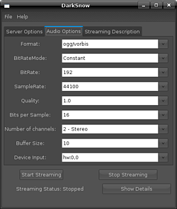

Darkice
Dieser Artikel wurde für die folgenden Ubuntu-Versionen getestet:
Ubuntu 14.04 Trusty Tahr
Zum Verständnis dieses Artikels sind folgende Seiten hilfreich:
Darkice  ist ein Source-Client für Internet-Radio-Stationen, also die Software für Moderatoren und DJs. Es verfügt auf der Eingangs-Seite über OSS-, ALSA-, Solaris-, JACK- und uLaw-Audio-Unterstützung und bedient Icecast, Icecast2 sowie den Darwin Streaming Server. Das grafische Frontend Darksnow erleichtert die Bedienung.
ist ein Source-Client für Internet-Radio-Stationen, also die Software für Moderatoren und DJs. Es verfügt auf der Eingangs-Seite über OSS-, ALSA-, Solaris-, JACK- und uLaw-Audio-Unterstützung und bedient Icecast, Icecast2 sowie den Darwin Streaming Server. Das grafische Frontend Darksnow erleichtert die Bedienung.
Installation¶
Folgendes Paket muss installiert [1] werden:
darkice (universe)
 mit apturl
mit apturl
Paketliste zum Kopieren:
sudo apt-get install darkice
sudo aptitude install darkice
Benutzung¶
Wer auf eine Bedienoberfläche zur Einrichtung verzichten möchte, kann direkt bei der manuellen Konfiguration weiterlesen.
Grafische Einrichtung mit Darksnow¶
Folgendes Paket muss für eine grafische Bedienoberfläche installiert [1] werden:
darksnow (universe )
mit apturl
Paketliste zum Kopieren:
sudo apt-get install darksnow
sudo aptitude install darksnow

Servereinstellungen¶
In den Servereinstellungen wird zuerst der Typ des Servers, sein Name oder seine IP-Adresse, sowie der Port und der Einbindepunkt am Server festgelegt. Das Passwort (bei Icecast2 eine Standardeinstellung), beispielsweise das Passwort des Benutzers source, muss natürlich auch richtig angegeben werden.
Audio-Einstellungen¶
In den Audio-Einstellungen werden Format und Qualität des Streams eingestellt und die korrekte Soundkarte gewählt. Dabei kann auch der Soundserver JACK angesprochen werden, um beliebige AudioPlayer zu Darkice zu verbinden, die ebenfalls über JACK-Anschlüsse verfügen.
Stream-Einstellungen¶
Die Stream-Einstellungen betreffen die Metadaten, die auf der Weboberfläche des Servers angezeigt werden und in den Yellow Pages veröffentlicht werden können.
Manuelle Konfiguration¶
Der Aufruf von darkice bei manueller Konfiguration erfolgt unter Angabe der Konfiguration im Terminal wie folgt [2]:
darkice -c <beispiel.conf>
Ohne Angabe einer Konfigurationsdatei versucht Darkice,die Einstellungen aus der Datei /etc/darkice.cfg zu lesen. Der allgemeine Aufbau der Datei sollte wie folgt aussehen [3]:
[general] # Allgemeine Einstellungen der Live Stream Sitzung [input] # Input Abschnitt (zum Audioeingang, der gesendet wird) [<Server>] # Stream Abschnitt (Beschreibt die Verbindung zu einem Server bestimmten Typs)
Es können für <Server> bis zu acht Abschnitte, benannt von [icecast-0] bis [icecast-7], erstellt werden. Diese können beliebig mit [icecast2-x]-Abschnitten gemischt werden.
Allgemeine Einstellungen¶
[general] duration = 60 # Dauer der Encodierung in Sekunden. 0 für endlos. bufferSecs = 5 # Größe des internen Buffer in Sekunden. reconnect = yes # Wiederverbinden bei Verbindungsverlust.
Input-Abschnitt¶
Behandelt den Audioeingang, der an den oder die Server gesendet wird.
[input] device = /dev/dsp # OSS DSP Soundkarten-Eingang sampleRate = 22050 # Samplerate in Hz. Gängige Werte: 11025, 22050, 44100, 48000 bitsPerSample = 16 # Bits pro Sample channel = 2 # Kanäle. 1 = mono, 2 = stereo
Stream-Abschnitt¶
Im Stream-Abschnitt können die Verbindung zu Icecast- bzw. Icecast2-Servern festgelegt werden. Es können bis zu acht Abschnitte, benannt von [icecast-0] bis [icecast-7], erstellt werden. Diese können beliebig mit [icecast2-x]-Abschnitten gemischt werden.
Stream-Abschnitt für Icecast:
[icecast-0] bitrateMode = cbr # Bitraten Modus: Konstante Bitrate bitrate = 96 # Bitrate des zum Server gesendeten Streams quality = 0.8 # Encodierungs Qualität (-1.0 bis 10.0) server = localhost # Hostname oder IP-Adresse des Icecast Servers port = 8000 # Port des Icecast Servers, gewöhnlich 8000 password = hackme # Passwort des Benutzers source auf dem Icecast Server mountPoint = stream # Einebindepunkt des Streams am Server name = IceTest # Metadaten: Name der Radio Station description = IceText # Metadaten: Beschreibung der Radio Station url = http://... # Metdateninfo: URL der Radio Station genre = Rock # Metadaten: Genre der Radio Station public = no # Veröffentlichung der Metdaten zur Radio Station
Stream-Abschnitt für Icecast2:
[icecast2-0] bitrateMode = abr # Bitraten Modus: Mittlere Bitrate format = vorbis # Format des Streams: Ogg Vorbis bitrate = 96 # Bitrate des Streams der zum Server gesendet wird server = localhost # Hostname oder IP-Adresse des Icecast Servers port = 8000 # Port des Icecast Servers, gewöhnlich 8000 password = hackme # Passwort des Benutzers source auf dem Icecast Server mountPoint = stream # Einebindepunkt des Streams am Server name = IceTest # Metadaten: Name der Radio Station description = IceText # Metadaten: Beschreibung der Radio Station url = http://... # URL der Radio Station genre = Rock # Metadaten: Genre der Radio Station public = no # Veröffentlichung der Metdaten zur Radio Station
- Erstellt mit Inyoka
-
 2004 – 2017 ubuntuusers.de • Einige Rechte vorbehalten
2004 – 2017 ubuntuusers.de • Einige Rechte vorbehalten
Lizenz • Kontakt • Datenschutz • Impressum • Serverstatus -
Serverhousing gespendet von